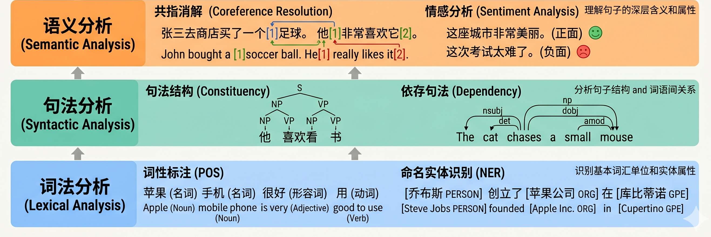

第四章 分解定义——专项任务
4.1 分解定义的形成
机器翻译是对理解的一种基于语言转换的定义，但结合当时的技术条件来看，要求系统很好的完成机器翻译任务仍然存在很大困难。这促使研究人员探索一些相对局部的研究目标，从而产生了许多专项任务。
许多专项任务都可以在机器翻译的需求中找到源头：词义消歧关系到译词选择，句法分析关系到结构映射，语义角色与篇章结构关系到信息焦点的保留等。这些任务往往都以分析文本的词法、句法、语义为目标。随着语料资源、标注工具的发展，这些任务逐渐从机器翻译这一整体目标中分离出来，成为独立研究方向，也形成了后续自然语言处理领域的核心研究问题。分解定义的出现，正是因为整体翻译目标的巨大挑战迫使研究者正视这些隐藏在”理解”之中的局部问题。
除了与机器翻译直接相关的问题之外，逐渐也出现了一些针对理解其他方面的专项任务，比如机器阅读理解（Machine Reading Comprehension，MRC）、自然语言推断（Natural Language Inference，NLI）等。这些任务并没有尝试单独作为理解的定义，但大多为理解提供了独特的视角。
4.2 从子问题到专项任务
从语言的形式层次出发，可以把”理解”分解为从底层到高层的三个处理层级：词法分析、句法分析、语义分析。这条路径在技术上具有明确的依赖关系：每一层的输出都是下一层的输入，逐层深入才能逼近真正的意义把握。

4.2.1 词法层（Lexical Analysis）
词法分析是最基础的层级，目标是确定每个词的基本属性。主要包含三类任务：
词性标注（Part-of-Speech Tagging，POS）为句中每个词标注其语法类别（名词、动词、形容词等）。Penn Treebank 是这一任务最重要的基准资源，包含约 100 万词的《华尔街日报》文本，标注了 36 类词性标签和完整句法结构 (Marcus et al., 1993)。词性标注看似简单，实则是所有后续分析的前提：“book”究竟是名词（一本书）还是动词（预订），直接影响句法和语义分析的方向。
命名实体识别（Named Entity Recognition，NER）从文本中自动识别人名、地名、机构名等专有名词并加以分类。CoNLL-2003 共享任务数据集是这一任务最广泛使用的评测基准，包含英德两种语言的新闻文本，标注人名（PER）、地名（LOC）、机构名（ORG）和其他（MISC）四类实体 (Tjong Kim Sang and De Meulder, 2003)。
词义消歧（Word Sense Disambiguation，WSD）确定多义词在具体语境中的准确义项。WordNet 是支撑这一任务的核心词汇资源，它将英语词汇按义项组织为”同义词集”（synset），并标注词义之间的上下位、整体-部分等语义关系，形成一个覆盖 15 万余词条的大规模词汇语义网络 (Fellbaum, 1998)。[1]
4.2.2 句法层（Syntactic Analysis）
句法分析的目标是识别词与词之间的结构关系，理解句子的组织方式。主要分为两条路线：
成分句法分析（Constituency Parsing）将句子解析为层级嵌套的短语结构树，用 NP（名词短语）、VP（动词短语）等成分标签描述句子的内部结构。Penn Treebank 同样是成分句法的标准基准，其括号表示的树结构至今仍是英语句法分析的主要训练与评测来源。Penn Treebank 的重要性在于，它把句法结构这一原本只能由专家判断的对象，转化为了可以被机器学习的标注数据，从而使统计句法分析成为可能。
依存句法分析（Dependency Parsing）不构建短语树，而直接标注词与词之间的语法关系（如主谓 nsubj、修饰语 amod 等），形成以动词为根节点的有向图。Universal Dependencies（UD）是目前最具影响力的依存句法标注体系，提供了跨 100 余种语言的统一标注规范和公开树库，使跨语言句法研究成为可能 (Nivre et al., 2016)。MaltParser 是早期最有影响力的数据驱动依存句法分析器，在 CoNLL 共享任务中对多个语言的解析精度均达到当时最高水准 (Nivre et al., 2007)。
4.2.3 语义层（Semantic Analysis）
语义分析是最接近”理解”的层级，目标是捕捉句子所表达的意义结构：谁做了什么、对谁、在哪里、何时、以何种方式。
语义角色标注（Semantic Role Labeling，SRL）为句中的论元标注其相对于谓词的语义角色（施事 Agent、受事 Patient、工具 Instrument、地点 Location 等）。Gildea and Jurafsky (2002) 的开创性工作首次将 SRL 定义为监督学习任务，基于 FrameNet 数据训练统计分类器，确立了谓词类型、短语类型、句法路径等核心特征集，奠定了后续十余年 SRL 研究的基本框架。
这一任务的两大核心资源代表了两种不同的语义角色定义路线：FrameNet (Baker et al., 1998) 基于框架语义学（Frame Semantics），为每个词汇单元定义其所激活的概念框架及框架内的各类参与者角色，语义粒度更细腻，更贴近人类认知；PropBank 则在 Penn Treebank 的句法树上标注谓词-论元结构，为每个动词定义语言中性的编号角色（ARG0、ARG1…），更适合大规模机器学习 (Palmer et al., 2005)。
- 克里斯蒂安·费尔鲍姆（Christiane Fellbaum，1947-）是美国计算语言学家，执教于普林斯顿大学；她主编的 WordNet 是词汇语义学与自然语言处理领域最具影响力的词汇资源之一，其按同义词集组织词汇并标注语义关系的设计深刻影响了后续数十年的词义消歧和语义分析研究。 ↩
4.3 以理解为目标的基准任务
与 4.2 中从机器翻译母体分离出的语言学任务不同，另一类专项任务不预设词法、句法、语义的分析路径，而是直接构造一个标准化的评测任务来回答”系统是否理解了某个侧面”。

4.3.1 SNLI：句间语义关系
自然语言推理（NLI）的任务是：给定一对句子，判断后一句是否被前一句蕴含、是否与之冲突、还是两者关系不足以确定 (Bowman et al., 2015)。SNLI 把这种原本较为抽象的语义判断做成了大规模标注数据集，使”句间关系判断”第一次成为可稳定训练和比较的主流任务，也让”理解”跳出分析层面，开始包含把握句子之间蕴含、矛盾和中立关系的能力。
4.3.2 SQuAD：篇章阅读理解
机器阅读理解（MRC）要求系统在一整段文本中定位、整合并输出答案。它把”读懂一段文本”转写为一个可以明确打分的任务：系统必须理解文章与问题之间的复杂对应，才能从原文中抽取或生成正确的答案片段。SQuAD数据集(Rajpurkar et al., 2016)收集了十万多条文章中包含的问题，篇章级理解能力由此有了一个可定量衡量的任务指标。
4.3.3 GLUE/SuperGLUE：通用理解的多任务聚合
除单个任务提供的视角之外，研究人员也开始尝试用多个任务的整体来评估理解能力。GLUE 通过把情感分类、句间关系判断、文本相似度等多个任务打包成统一基准，将”通用语言理解”包装为可比较的多任务成绩 (Wang et al., 2018)。SuperGLUE 在 GLUE 饱和后进一步提高难度，加入更复杂、更不容易靠浅层技巧解决的任务，也揭示出GLUE的高分并不意味着问题已经解决 (Wang et al., 2019)。
4.3.4 XTREME/CLUE：跨越英语中心
很多被默认的通用性判断，其实是建立在英语中心经验之上的。研究人员也进行了不同语言的理解探索。XTREME 关心模型能否把在一种语言上学到的能力迁移到更多语言 (Hu et al., 2020)；CLUE 则是面向中文语境组织起来的一组理解任务和评测标准 (Xu et al., 2020)。
这里的关键变化，不只是数据集越来越丰富，而是研究者开始接受一种新的方法论前提：对”理解”的判断可以来自一个精心构造的评测任务本身。每一个 benchmark 都在用它的数据分布、评分规则和难度设计，定义着”什么叫在这一维度上理解了语言”。从这个角度看，benchmark 不仅是测量工具，更是理解定义的制造工具：每一项新基准的提出，都是对上一代任务覆盖盲区的回应，同时也是对理解边界的一次重新划定。
参考文献
Bowman, Samuel R., Gabor Angeli, Christopher Potts, and Christopher D. Manning. 2015. A large annotated corpus for learning natural language inference. In Proceedings of EMNLP 2015, pages 632–642. Association for Computational Linguistics.
Rajpurkar, Pranav, Jian Zhang, Konstantin Lopyrev, and Percy Liang. 2016. SQuAD: 100,000+ questions for machine comprehension of text. In Proceedings of EMNLP 2016, pages 2383–2392. Association for Computational Linguistics.
Wang, Alex, Amanpriya Singh, Julian Michael, Felix Hill, Omer Levy, and Samuel R. Bowman. 2018. GLUE: A multi-task benchmark and analysis platform for natural language understanding. In Proceedings of EMNLP 2018. Association for Computational Linguistics.
Wang, Alex, Yada Pruksachatkun, Nikita Nangia, Amanpriya Singh, Julian Michael, Felix Hill, Omer Levy, and Samuel R. Bowman. 2019. SuperGLUE: A stickier benchmark for general-purpose language understanding systems. In Advances in Neural Information Processing Systems 32. Curran Associates.
Hu, Junjie, Sebastian Ruder, Aditya Siddhant, Graham Neubig, Orhan Firat, and Melvin Johnson. 2020. XTREME: A massively multilingual multi-task benchmark for evaluating cross-lingual generalization. In Proceedings of ICML 2020. PMLR.
Xu, Liang, Hai Hu, Xuanwei Zhang, Lu Li, Chenjie Cao, Yudong Li, Yechen Xu, Kai Sun, Dian Yu, Cong Yu, Yin Tian, Qianqian Dong, Weitang Liu, Bo Sheng, Meiyuan Shi, Weijian Li, Yiming Cui, Ting Liu, Emerson Nivre, and Zhiyuan Liu. 2020. CLUE: A Chinese language understanding evaluation benchmark. In Proceedings of COLING 2020. International Committee on Computational Linguistics.
4.4 历史必要性
分解定义之所以成为主流，根本原因在于整体理解目标过于庞大，而科学研究需要更清晰的控制变量和更可重复的实验对象。与其争论系统是否真正”懂了”，不如先问它能否稳定地区分蕴含与矛盾，能否在篇章中定位答案，能否在情感或常识上做出正确判断。这种”分而治之”的策略，使自然语言理解研究从少数演示系统走向大规模、可比较、可复制的实验体系。它让理解研究获得了实验科学的形态。
分解定义的核心在于：不再要求系统一次性完成完整理解，而是把”理解”拆成若干可以单独界定、单独训练和单独评测的子能力。这样做并不意味着研究者放弃了整体理解目标，而是承认整体目标过于复杂，需要通过一系列局部能力来逼近。理解在这一阶段不再被看作一个单一属性，而被看作能力组合：理解词义、理解句法关系、理解篇章、理解推理链条、理解情感立场、理解常识约束等等。
分解定义把”理解”从单一宏大命题转变成多个可处理的子问题。不同团队可以分别处理不同子任务，构建不同数据集，提出不同指标，再通过统一 benchmark 将这些局部结果重新组织成一种关于”通用理解”的想象。这一机制极大提高了研究速度，也深刻改变了对”理解的外部证据”的认识。
4.5 技术进展
早期的各个专项任务在方法上也经历了规则系统到统计学习的摸索，与机器翻译阶段的技术路径类似，这里不再赘述。在统计学习方法盛行之后，借助于强大的学习模型和专门标注的训练数据，各项任务的能力都有了很大的飞跃。但是任务粒度细化也暴露出日益尖锐的矛盾：每个任务都需要其特定的标注数据，但标注数据的代价大、规模有限；每个任务往往都需要训练专门的模型，这些模型之间能力并不直接相关，也无法进行共享。这些矛盾进一步引发了整个预训练的时代。
4.5.1 词表示学习：从离散符号到连续向量
在深度学习进入自然语言处理之前，每个词被视为独立的符号，并表示为高维稀疏的独热向量（one-hot representation），两个词之间的语义相似关系完全无法在表示中体现。2013 年，Mikolov 等人提出 Word2Vec，通过预测词的上下文邻居来训练低维连续词向量，使语义相近的词在向量空间中自动靠近 (Mikolov et al., 2013)。这一工作不只提供了更好的词表示特征，更说明即便没有人工标注，仅凭海量普通文本中的共现统计，系统就可以学到有语义价值的表示。这是”从无标注数据中学习”的早期有力证明。
Word2Vec 得到了静态的词表示，但同一个词无论出现在什么语境中，都只有同一个向量表示。“苹果”在”吃苹果”和”苹果公司”这两个语境中应该有不同含义，但静态词向量无法体现这一区别。 2018 年，Peters 等人提出 ELMo（Embeddings from Language Models），通过在大规模文本上训练双向 LSTM 语言模型，为每个词生成随语境变化的上下文化表示 (Peters et al., 2018)。同一个词在不同句子中会获得不同的向量表示，歧义问题因此得到显著缓解。ELMo 在多个自然语言理解基准任务上取得了大幅改进，并确立了一种新的迁移学习范式：先在大规模无标注文本上学习语言表示，再把这些表示作为特征提供给下游任务。
4.5.2 预训练-微调范式：GPT 与 BERT
ELMo 是”特征提取”式的迁移，下游模型仍然需要独立设计。2018 年，Radford 等人在 OpenAI 推出 GPT（Generative Pre-Training），采用 Transformer 解码器结构在海量文本上进行无监督的语言模型预训练（预测下一个词），然后通过微调（fine-tuning）适配下游任务。GPT将不同的任务统一为有限的几种形式，并用统一的模型结构来处理，不同任务只需针对性训练输出层参数即可 (Radford et al., 2018)。同年，Devlin 等人在 Google 推出 BERT（Bidirectional Encoder Representations from Transformers），通过掩码语言模型（随机遮盖输入词并预测）和下句预测两个预训练目标，在大规模文本上学习深度双向表示 (Devlin et al., 2019)。
GPT和BERT为代表的预训练模型出现之后，在 GLUE、SQuAD 等几乎所有主流自然语言理解基准上同步大幅刷新纪录。更重要的是，它们表明预训练从海量普通文本中学到的通用语言表示，可以迁移到几乎所有语言理解任务，并且其效果远超以往任何专用特征工程方法。 预训练-微调范式表明，不同任务可以共享同一个预训练模型基础，这些模型的参数规模从百万到千万量级，作为通用表示，构成各种子任务的共同技术基础。在此基础上，只需少量任务特定数据就能获得良好效果。
4.5.3 In-Context Learning 范式：GPT-2 与 GPT-3
2019 年，OpenAI 发布 GPT-2，把预训练语言模型的参数规模提升到 15 亿，并观察到一个出人意料的现象：这个模型在没有任何任务特定微调的情况下，仅凭提示词（prompt）就能完成多种自然语言处理任务 (Radford et al., 2019)。GPT-2 的论文标题”语言模型是无监督多任务学习者”，正是对这一发现的概括。
2020 年，GPT-3 把参数规模进一步推进到 1750 亿，并系统研究了 In-Context Learning（上下文学习）的能力 (Brown et al., 2020)。 In-Context Learning指在不更新模型参数的情况下，仅通过在输入中给出任务描述（task description）或少量示例（few-shot），模型就能理解任务并给出合理的回应。这展示出一条与传统的监督学习范式有根本差别的路径：传统方式需要大量标注数据和梯度更新，而 In-Context Learning 只需要在推理时提供文字示例。
GPT-3 展现出的这一能力引发了广泛讨论：一个模型是否可以通过足够大规模的语言建模预训练，自发地”涌现”出处理各类语言理解任务的能力？这个问题直接指向了分解定义与整体理解之间的核心差异：也许”理解”并不需要对每个子能力分别显式建模，而是可以从足够大规模的预训练中涌现出来。 这正是大语言模型时代开始的技术前提，也是下一章所讨论的交互定义时代的能力基础。
4.5.4 基础设施与评测平台
分解定义的兴起，与计算资源的逐步成熟密切相关。磁盘存储成本持续下降，大规模语料的收集和存储从昂贵的特例变成常规操作；计算机辅助标注工具的出现使人工标注效率大幅提升；互联网的普及则为众包标注提供了新的可能。到了 2010 年代，GPU 加速使深度学习的大规模训练成为现实，监督学习在更大规模的标注数据上充分发挥效果。这些条件共同支撑了树库、语义资源、标注语料等核心基础设施的建设，使各个子任务有了共享的数据和评测基础，自然语言处理领域进一步形成了一套成熟的评测体系：
CoNLL（Conference on Computational Natural Language Learning）共享任务是覆盖面最广的评测平台，历年任务跨越词法到语义多个层级：2003 年聚焦命名实体识别（NER），确立了至今通用的 BIO 标注体系；2006/2007 年聚焦多语言依存句法分析；2004/2005 年聚焦语义角色标注，确立了 PropBank/FrameNet 上的 SRL 评测标准；2017/2018 年又回到 Universal Dependencies 依存句法，规模扩展至 40 余种语言。
SemEval（International Workshop on Semantic Evaluation）专注词汇与语义层面的评测，前身为 1998-2007 年的 Senseval 词义消歧评测系列，2007 年起更名为 SemEval 并大幅扩展任务类型，涵盖词义消歧、语义文本相似度、情感分析、关系分类、语义角色标注、隐喻识别等数十类任务。
MUC（Message Understanding Conference，1987-1998）是信息抽取领域最早的系统性评测活动，在其运行期间固定化了命名实体识别、共指消解等任务的定义与评测方法，直接催生了后来的 CoNLL NER 共享任务和 ACE 评测。ACE（Automatic Content Extraction，1999-2008）在 MUC 之后由 NIST 接续组织，进一步推动了实体识别、关系抽取和事件抽取的标准化。
这些评测平台通过将每个子任务的数据、指标和基线公开化，为分解定义下的理解探索提供了基础设施——研究者可以围绕同一数据集训练系统、比较结果、复现结论，并在共享的坐标系中协调研究注意力。树库、语义资源和大规模标注集的存在，使许多子能力得以被稳定研究，分解定义之所以成立，不只是因为理论上可以拆分，更因为这些拆分得到了资源层面的固定化。与此同时，社区也容易围绕”怎样把分数做高”来组织研究，使 benchmark 慢慢反过来定义什么才算重要的理解能力。
参考文献
Mikolov, Tomas, Kai Chen, Greg Corrado, and Jeffrey Dean. 2013. Efficient estimation of word representations in vector space. In Proceedings of the International Conference on Learning Representations (ICLR 2013) Workshop Track.
Peters, Matthew E., Mark Neumann, Mohit Iyyer, Matt Gardner, Christopher Clark, Kenton Lee, and Luke Zettlemoyer. 2018. Deep contextualized word representations. In Proceedings of the 2018 Conference of the North American Chapter of the Association for Computational Linguistics: Human Language Technologies, Volume 1 (Long Papers), pages 2227–2237, New Orleans, Louisiana. Association for Computational Linguistics.
Radford, Alec, Karthik Narasimhan, Tim Salimans, and Ilya Sutskever. 2018. Improving language understanding by generative pre-training. Technical report, OpenAI.
Devlin, Jacob, Ming-Wei Chang, Kenton Lee, and Kristina Toutanova. 2019. BERT: Pre-training of deep bidirectional transformers for language understanding. In Proceedings of the 2019 Conference of the North American Chapter of the Association for Computational Linguistics: Human Language Technologies, Volume 1 (Long and Short Papers), pages 4171–4186, Minneapolis, Minnesota. Association for Computational Linguistics.
Radford, Alec, Jeffrey Wu, Rewon Child, David Luan, Dario Amodei, and Ilya Sutskever. 2019. Language models are unsupervised multitask learners. Technical report, OpenAI.
Brown, Tom B., Benjamin Mann, Nick Ryder, Melanie Subbiah, Jared Kaplan, Prafulla Dhariwal, Arvind Neelakanth, Girish Sastry, Amanda Askell, Sandhini Agarwal, Ariel Herbert-Voss, Gretchen Krueger, Tom Henighan, Rewon Child, Aditya Ramesh, Daniel M. Ziegler, Jeffrey Wu, Clemens Winter, Christopher Hesse, Mark Chen, Eric Sigler, Mateusz Litwin, Scott Gray, Benjamin Chess, Jack Clark, Christopher Berner, Sam McCandlish, Alec Radford, Ilya Sutskever, and Dario Amodei. 2020. Language models are few-shot learners. In Advances in Neural Information Processing Systems 33, pages 1877–1901. Curran Associates.
4.6 技术支撑与局限
深度学习和预训练模型极大提升了分解任务上的成绩。BERT 等模型通过大规模预训练学得可迁移表示，使得多个自然语言理解任务的性能同步提升 (Devlin et al., 2019)，这让研究者更强烈地相信不同自然语言理解任务背后可能共享某种通用语言表示。局部高分确实反映了模型在某些受控条件下的能力提升，也推动了表示学习、预训练和迁移学习的发展。没有这一阶段的大量局部突破，后来的大模型也很难形成。
但局部任务高分并不自动等于整体理解。当 benchmark 被过度优化时，研究可能从”追求理解”转向”追求分数”，这其中数据污染、捷径学习等问题都影响了对理解的真正追求。数据污染，指的是测试集信息以某种方式进入训练过程，导致模型成绩被高估；捷径学习，则是模型抓住了数据中的表面线索，而没有真正掌握任务原本想测的能力。“捷径学习”是一种”会做题但未必真会”的现象：模型也许发现了某些词面提示、标注习惯或数据偏差，靠这些线索就能拿到高分，却没有形成更稳健的能力。这正是分解定义在成功之后显露出的内在悖论。
近两年的评测研究使这种悖论变得更加明确。已有工作发现，只要对题面做语义基本不变、但表面形式有所变化的改写，模型表现就可能明显波动；另一些工作则表明，选项长度、题型切换或无关名词替换这类按理说不应决定理解成败的因素，也足以显著影响结果 (Cohen-Inger et al., 2025; Zhao et al., 2025)。这说明许多 benchmark 分数仍可能混合了真实能力、数据熟悉度与形式适应能力，而不只是对语义内容的稳健把握。换句话说，benchmark 当然仍是重要证据，但它越来越清楚地被看作理解的代理证据，而不是理解本身。
这一困境在理论层面也得到了更系统的阐述。艾米莉·本德等人提出了”随机鹦鹉”（stochastic parrot）的批评性隐喻：大型语言模型通过在海量文本上训练，可以产生极其流利的语言输出，但这本质上是对人类语言统计分布的压缩和重现，而不必然意味着模型真正理解了语言所承载的意义 (Bender et al., 2021)。[2]这一论证与塞尔（1980）四十年前的中文房间论证存在深层呼应：两者的核心结构都是”句法（或统计形式）不能自动产生语义”，区别仅在于中文房间瞄准规则 AI，随机鹦鹉瞄准统计 AI。
此外，分解定义蓬勃发展之后，还面临一个更根本的问题：虽然每个任务都在某种程度上给理解的一个层面进行了定义，但这些任务始终是静态的和局部的。即使它们的总和仍然不能简单的与理解划等号。研究人员仍然在不断尝试定义出新的任务，来刻画那些没有被现有任务描述的理解的维度。
- 艾米莉·本德（Emily M. Bender，1973-）是美国计算语言学家，执教于华盛顿大学，研究聚焦于多语言自然语言处理、语言类型学与语言模型的社会影响；她参与提出的"随机鹦鹉"论证是近年来对大语言模型理解能力最具影响力的批判之一，深刻塑造了学界关于语言模型能力边界的讨论。 ↩
参考文献
Devlin, Jacob, Ming-Wei Chang, Kenton Lee, and Kristina Toutanova. 2019. BERT: Pre-training of deep bidirectional transformers for language understanding. In Proceedings of NAACL-HLT 2019, pages 4171–4186. Association for Computational Linguistics.
Cohen-Inger, Lihi, et al. 2025. Forget what you know about LLMs evaluations — LLMs are like a chameleon. (preprint)
Zhao, et al. 2025. Large language models badly generalize across option length, problem types, and irrelevant noun replacements. (preprint)
Bender, Emily M., Timnit Gebru, Angelina McMillan-Major, and Shmargaret Shmitchell. 2021. On the dangers of stochastic parrots: Can language models be too big? In Proceedings of FAccT 2021, pages 610–623. ACM.
Searle, John R. 1980. Minds, brains, and programs. Behavioral and Brain Sciences, 3(3):417–424.
4.7 本章思考题
参考讨论见附录”第四章思考题参考讨论”。
- 把”理解”拆成若干子任务，究竟是在更精细地研究理解，还是在把理解打碎到失去整体性？
- 专项任务之所以显得合理，究竟是因为它们确实对应了理解的若干组成部分，还是因为它们更适合数据标注、实验控制与排行榜竞争？
- 能否用一个具体例子说明：一个系统在某个专项任务上得高分，却未必具备相应的稳健能力？
- 如果一个模型在 SNLI、SQuAD、GLUE 等基准上都表现优秀，为什么仍然可能怀疑它并未真正”理解”语言？
- benchmark 的出现，到底是在测量研究进展，还是也在塑造研究进展本身？换句话说，它究竟只是”尺子”，还是也在决定研究者训练什么能力？
- 多语言 benchmark（如 XTREME、CLUE）对”通用理解”这一概念提出了什么挑战？过去很多被默认的”通用性”是否其实建立在英语中心经验之上？